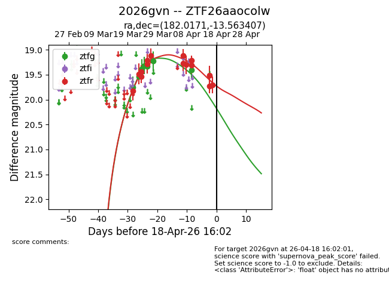
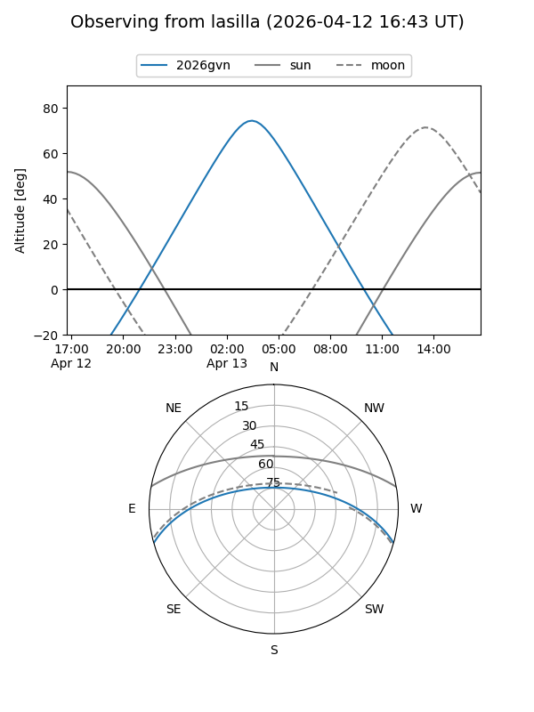
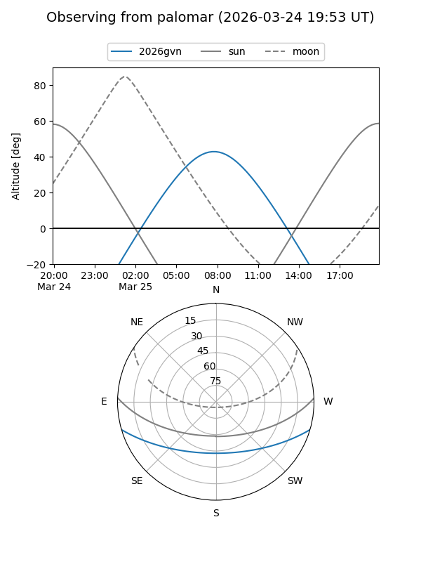
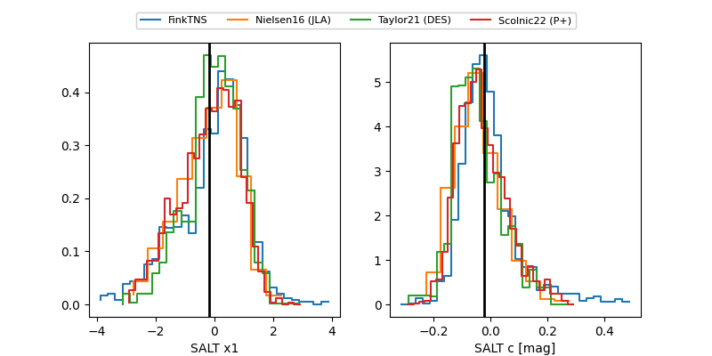

2026gvn
Target 2026gvn at 2026-04-18 16:06
Aliases and brokers:
FINK: link
Lasair: link
ALeRCE: link
TNS: link
YSE: link
alt names
ZTF26aaocolw (ztf,fink_ztf)
2026gvn (tns,yse)
Coordinates:
equatorial (ra, dec) = 182.0171,-13.56341
equatorial (HMS+DMS) = 12:08:04.10,-13:33:48.26
galactic (l, b) = (287.0819,+47.96916)
Flags:
Photometry:
last ztfg=19.41, ztfr=19.70
7 ztfg, 15 ztfr detections
Lightcurve

Visibility


Additional plots
